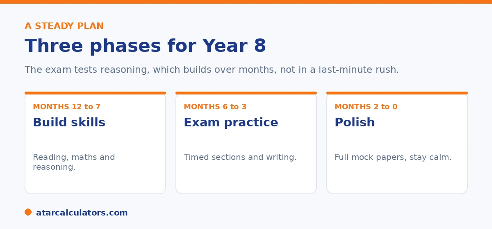

Here is the short version. The Victorian exam is sat in Year 8, for Year 9 entry. Spread preparation over several months. Build reasoning skills in reading, maths, and verbal and numerical reasoning first. Then add timed practice and writing under the ACER format, with a persuasive and a creative task. Keep it steady and low pressure, since reasoning builds over months, not in a last-minute rush.
Good preparation for the Victorian exam is steady, not frantic. The exam tests reasoning and writing, which build over time, so the aim is to develop them calmly.
Below is a practical plan. The exam is sat in Year 8, for Year 9 entry. To track progress, use our Victorian selective calculator.
Key takeaways
- The exam is sat in Year 8, for Year 9 entry.
- Spread preparation over several months, not weeks.
- Build reasoning skills first, then add exam practice.
- Practise writing, both a persuasive and a creative task.
- Use up-to-date materials that match the ACER format.
- Keep it steady and low pressure. Reasoning builds over time.
Start with the right mindset
First, set the right goal. The exam tests ability and reasoning, not memorised content. So preparation is about building skills, not cramming facts. It also covers writing, which many families forget to practise.

Use materials that match the current ACER format. The exam changed in 2023, so older EduTest-style papers no longer fit it well.
Phase one: build the skills
For the first stretch, build the core skills. Read widely and talk about texts, to deepen comprehension and verbal reasoning. Practise maths and numerical reasoning, working on unfamiliar problems rather than rote sums. Start short reasoning practice to warm up logic.
This is also the time to begin writing regularly. Both a persuasive and a creative task appear, so practise both styles, focusing on clear ideas and structure.
Phase two: add exam practice
In the middle months, add timed, exam-style practice. Use up-to-date, ACER-matched materials. Begin timing each section, so your child gets used to the pace and learns not to linger on hard questions.
Keep writing in the mix, under timed conditions, since it is easy to neglect. A planned, well-structured response beats a rushed one. For what the exam covers, see our entry test guide.
Want to track practice results over time?
Try the Victorian selective calculator →Phase three: polish and settle
In the final weeks, run full, timed mock papers under realistic conditions. The goal is stamina and pacing, not new content. Review every mistake by type, looking for the recurring slip rather than the score.
Then ease off in the last week, and keep the mood calm. A rested, settled child shows what they can really do on the day.
Do not neglect the writing
Writing deserves a special mention, because families often focus on reasoning and forget it. The exam includes two writing tasks, one persuasive and one creative, and they count toward the result.
Practise planning quickly, structuring clearly, and writing with control under time limits. Regular short writing practice, with feedback, builds this faster than occasional long pieces.
Writing deserves extra attention. It is where preparation most often falls short, and where steady work pays off. The exam includes writing tasks. They test whether a child can plan, structure and express ideas clearly under time pressure. These are skills that grow through practice, not natural talent. Yet many families pour energy into reasoning and numeracy, and leave writing to look after itself.
The most effective approach is little and often, with feedback. Short, timed writing pieces, done regularly, build the habits the exam rewards. Those habits are quickly generating ideas, organising them into a clear structure, and writing with control before the clock runs out. Regular short pieces build these far better than the occasional long essay.
Feedback is the multiplier. A child improves fastest when someone points out exactly what worked and what to fix. That might be a stronger opening, clearer paragraphing, or tighter time management. So having a parent, teacher or tutor read and respond to pieces matters more than the sheer volume written.
It also helps to practise both the persuasive and creative styles the exam uses, since they call on different strengths. Rehearse planning under time limits too. Many capable writers lose marks simply by running out of time. Treat writing as a core part of preparation, with its own regular slot. Keep the pieces short and the feedback specific. A child who might otherwise underperform here can turn this section into a genuine strength.
Keeping it healthy
Finally, protect your child's wellbeing. Too much pressure harms both results and confidence. Keep sessions reasonable, build in breaks and downtime, and remember that one exam does not define a child.
A calm, supported child performs better than a stressed one. For how entry works overall, see our Victorian selective schools guide.
Preparing in Year 8
Because the exam is sat in Year 8 for Year 9 entry, Year 8 is the year to build skills. Start early enough to work steadily, without a stressful last-minute rush.
So spread preparation across the year: regular reading, some mathematics and reasoning practice, and a little writing to a prompt. Steady habits beat cramming.
Practising reasoning and writing
The reasoning and writing sections reward practice more than memorising facts. So expose your child to varied puzzles for reasoning, and a simple read-plan-write routine for the writing tasks.
These build the flexible thinking and clear expression the exam looks for. Both improve gradually, which is another reason to start in good time.
Know the format first
A good first step is making sure your child knows the exam's structure: which sections it has, that each is timed, and that it includes writing. Surprises on the day cost focus and confidence.
So walk through the format early, and do a little practice in each section. Familiarity lets your child spend their energy on the questions, not on working out how the exam runs.
Look after wellbeing
As with any exam, the basics do a lot of the work. A rested, calm student performs closer to their real ability than an anxious, over-drilled one, so wellbeing is part of preparation.
So keep routines steady in the lead-up, protect sleep, and keep stress low. Familiarity with the format and steady skills, paired with a calm child, is a far better recipe than cramming.
Common questions
How do I prepare for the Victorian selective entry test?
Spread preparation over several months. Build reasoning skills in reading, maths, and verbal and numerical reasoning first, then add timed practice and writing under the ACER format. Keep it steady and low pressure.
When should preparation start?
Several months before the exam is sensible, which lets reasoning and writing skills build without stress. The exam is sat in Year 8, so many families begin in Year 7 or early Year 8.
How do you practise the reasoning sections?
With regular practice on unfamiliar problems, spread over months. Verbal and numerical reasoning test how a child thinks, not what they have memorised, so familiarity with the question types is what helps.
Do practice tests help?
Yes, used well. Timed, ACER-matched practice removes surprises about the format and pace. Review each mistake by type rather than chasing the score, and taper in the final week.
Should we practise writing?
Yes. The exam includes two writing tasks, one persuasive and one creative, and families often neglect them. Practise planning quickly and writing with structure under time limits.
Is coaching necessary?
Good preparation matters, but expensive coaching is not the only path. The exam rewards genuine reasoning and writing built steadily over months, which consistent, well-structured practice can develop.
Track practice results
Enter practice section results for a rough competitiveness guide. Free, and no signup.
Open the Victorian selective calculator →Related guides
This guide is general information for parents, not formal advice. The Victorian Department of Education and ACER set the rules, and details like dates and the selection categories can change. There are no published cut-off scores, so always confirm current details on the official Victorian selective entry pages. Reviewed by the ATARCalculators Editorial Team.